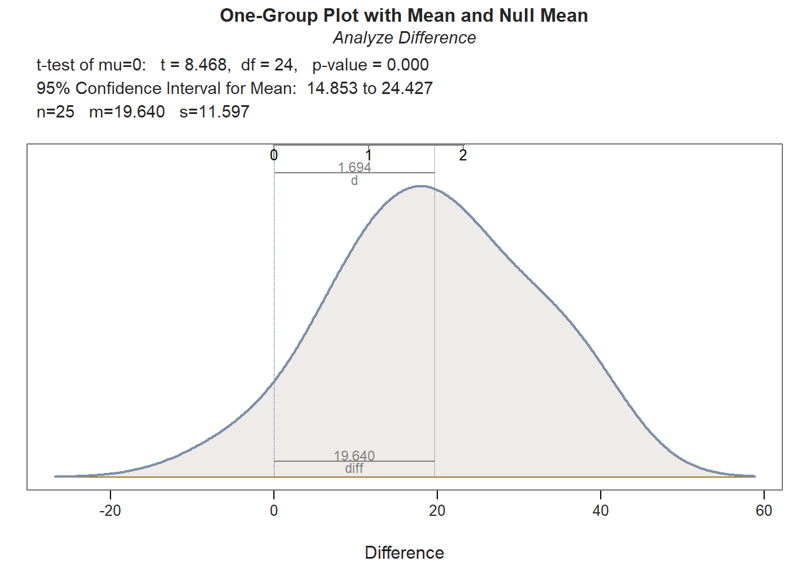
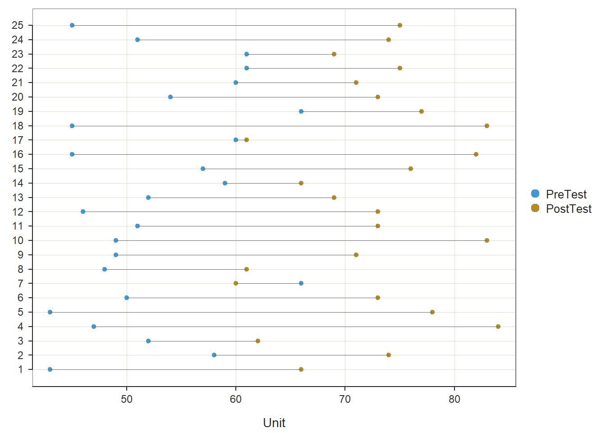
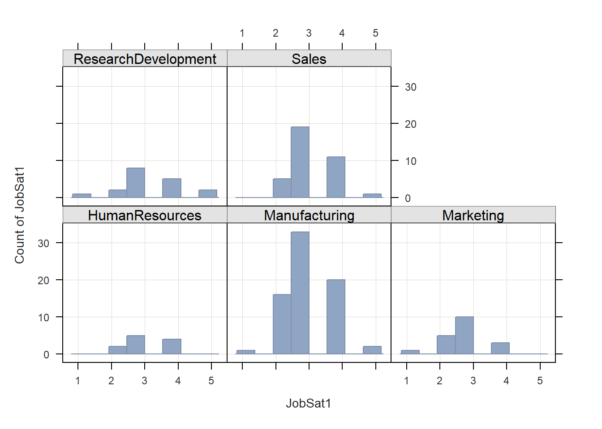

Chapter 29 Evaluating a Pre-Test/Post-Test without Control Group Design Using Paired-Samples t-test
In this chapter, we learn about the post-test/pre-test without control group training evaluation design and how a paired-samples t-test can be used to analyze the data acquired from this design. Well begin with conceptual overviews of this training evaluation design and of the paired-samples t-test, and then well conclude with a tutorial.
29.1 Conceptual Overview
In this section, well begin by describing the post-test/pre-test without control group training evaluation design, and well conclude by reviewing the paired-samples t-test, with discussions of statistical assumptions, statistical significance, and practical significance; the section wraps up with a sample-write up of a paired-samples t-test used to evaluate data from a post-test/pre-test without control group training evaluation design.
29.1.1 Review of Pre-Test/Post-Test without Control Group Design
In a pre-test/post-test without control group training evaluation design (i.e., research design), all employees participate in the same training program, and there is no random assignment and no control group. This design can best be described as pre-experimental. A paired-samples t-test can be used to analyze the data from a pre-test/post-test without control group design, provided the statistical assumptions are satisfied.
Like any evaluation design, there are limitations to the inferences and conclusions we can draw from a pre-test/post-test without control group design. As a strength, this design includes a pre-test, which assesses initial performance on the focal outcome measure. The pre-test serves as a baseline and gives us information about where the employees started with respect to outcome measure prior to completing the training. Further, the addition of a pre-test allows us to assess whether employees scores on the outcome measure have changed from before to after training. As a major weakness, this design lacks a control group and, moreover, random assignment to treatment and control groups; for these reasons, this design is not considered (quasi-)experimental. The lack of a control group (i.e., comparison group), means that we are unable to compare if the direction and amount of any observed change from pre-test to post-test differs from a group that did not receive the program training program. Consequently, this design doesnt give us much confidence that any change we observe was due to the training itself as opposed to natural maturation and developmental processes or other confounding factors. In other words, this design doesnt given us much confidence that the training caused any change we observe from pre-test to post-test.
29.1.2 Review of Paired-Samples t-test
The paired-samples t-test is an inferential statistical analysis that can be used to compare the to compare the mean of the differences between two sets of dependent scores to some population mean; in the context of training evaluation, the population mean is typically set to zero. That is, this analysis helps us understand whether one sample of cases shows evidence of change or difference between two dependent sets of scores. Often dependence refers to the fact that the two sets of scores (through which a difference score is calculated) come from the same group of individuals who were measured (assessed) twice over time (e.g., time 1 assessment and time 2 assessment for same employees), twice using the same scale associated with different foci (e.g., ratings of supervisor satisfaction and coworker satisfaction from same employees), or twice using the same scale evaluating a common target but associated with two different raters/sources (e.g., employee self-ratings of performance and supervisor-ratings of employee performance). The paired-samples t-test is sometimes called a dependent-samples t-test, a repeated-measures t-test, or a Students t-test.
The formula for a paired-samples t-test can be written as follows:
\(t = \frac{\overline{X}_D - \mu_0}{\frac{s_D}{\sqrt{n}}}\)
where \(\overline{X}_D\) is the mean of the differences between the two sets of dependent scores, \(\mu_0\) is the zero or non-zero population mean to which \(\overline{X}_D\) is compared, \(s_D\) is the standard deviation of the differences between the dependent scores, and \(n\) refers to the number of cases (i.e., sample size).
29.1.2.1 Statistical Assumptions
The statistical assumptions that should be met prior to running and/or interpreting estimates from a paired-samples t-test include:
- The difference scores based on the two outcome measures (e.g., pre-test, post-test) are independent of each other, suggesting that cases (employees) are randomly sampled from the underlying population;
- The difference scores have a univariate normal distribution in the underlying population.
29.1.2.2 Statistical Significance
If we wish to know whether the mean of the differences differs from the population mean to a statistically significant extent, we can compare our t-value value to a table of critical values of a t-distribution. If our calculated value is larger than the critical value given the number of degrees of freedom (df = n - 2) and the desired alpha level (i.e., significance level, p-value threshold), we would conclude that there is evidence that the mean of the differences differs to a statistically significant extent from the population mean (e.g., zero). Alternatively, we can calculate the exact p-value if we know the t-value and the degrees of freedom. Fortunately, modern statistical software calculates the t-value, degrees of freedom, and p-value for us.
Using null hypothesis significance testing (NHST), we interpret a p-value that is less than .05 (or whatever two- or one-tailed alpha level we set) to meet the standard for statistical significance, meaning that we reject the null hypothesis that the mean of the differences between the two sets of dependent scores is equal to the population mean; as noted above, in the training evaluation context, the population mean is often set to zero. In other words, if the p-value is less than .05, we conclude that the mean of the differences differs from zero to a statistically significant extent. In contrast, if the p-value is equal to or greater than .05, then we fail to reject the null hypothesis that the mean of the differences is equal to zero. Put differently, if the p-value is equal to or greater than .05, we conclude that the mean of the differences does not differ from zero to a statistically significant extent, leading us to conclude that there is no change/difference between the two sets of dependent scores in the population.
When setting an alpha threshold, such as the conventional two-tailed .05 level, sometimes the question comes up regarding whether borderline p-values signify significance or nonsignificance. For our purposes, lets be very strict in our application of the chosen alpha level. For example, if we set our alpha level at .05, p = .049 would be considered statistically significant, and p = .050 would be considered statistically nonsignificant.
Because our paired-samples t-test is estimated using data from a sample drawn from an underlying population, sampling error will affect the extent to which our sample is representative of the population from which its drawn. That is, the observed mean of the differences is a point estimate of the population parameter and is subject to sampling error. Fortunately, confidence intervals can give us a better idea of what the true population parameter value might be. If we apply an alpha level of .05 (two-tailed), then the equivalent confidence interval (CI) is a 95% CI. In terms of whether the difference between two means is is statistically significant, if the lower and upper limits of 95% CI do not include zero, then this tells us the same thing as a p-value that is less than .05. Strictly speaking, a 95% CI indicates that if we were to hypothetically draw many more samples from the underlying populations and construct CIs for each of those samples, then the true parameter (i.e., true value of the mean of the differences in the population) would likely fall within the lower and upper bounds of 95% of the estimated CIs. In other words, the 95% CI gives us an indication of plausible values for the population parameter while taking into consideration sampling error. A wide CI (i.e., large difference between the lower and upper limits) signifies more sampling error, and a narrow CI signifies less sampling error.
29.1.2.3 Practical Significance
A significant paired-samples t-test and associated p-value only tells us that the mean of the differences is statistically different from zero. It does not, however, tell us about the magnitude of the mean of the differences or in other words, the practical significance. The standardized mean difference score (Cohens d) is an effect size, which means that it is a standardized metric that can be used to compare d-values compare samples. In essence, the Cohens d indicates the magnitude of the mean of the differences in standard deviation units. A d-value of .00 would indicate that the mean of the differences is equal to zero, while the following are some generally accepted qualitative-magnitude labels we can attach to the absolute value of d.
| Cohens d | Description |
|---|---|
| .20 | Small |
| .50 | Medium |
| .80 | Large |
Here is the formula for computing d:
\(d = \frac{\overline{X}_D} {s_D}\)
where \(\overline{X}_D\) is the mean of the differences between the two sets of dependent scores, and \(s_D\) is the standard deviation of the differences between the dependent scores.
29.1.2.4 Sample Write-Up
Example 1: The same employees are assessed on the exact same test before and after completing the same training program; in other words, the employees took part of a pre-test/post-test without control group training evaluation design. Because each participant has two scores on the same test (corresponding to the pre-test and post-test), a paired-samples t-test is an appropriate inferential statistical analysis for determining whether the mean of the differences between the sets of pre-test and post-test scores differs from zero, assuming the aforementioned statistical assumptions have been satisfied. More specifically, a paired-samples t-test was used to determine whether there were significant changes within participants in terms of their average test scores from before participating in the training program to after participating. The mean of the differences (i.e., before-training scores subtracted from after-training scores) for 25 participants was 19.64 (SD = 11.60), and possible test scores could range from 1 to 100 points. Further, the paired-samples t-test indicated that this mean of the differences is significantly greater than zero (t = 8.47, p < .01, 95% CI[14.85, 24.43]) and is large in magnitude (d = 1.69).
Example 2: A single sample of 30 employees was asked to rate their pay satisfaction and their supervisor satisfaction. Here, the same employees rated their satisfaction with two different targets: pay and supervisor. Because the same employees rated two different ratings targets, we can classify it as a repeated-measures design, which is amenable to a paired-samples t-test. A paired-samples t-test is used to determine whether there the mean of the differences between employees pay satisfaction and supervisor satisfaction differed from zero. We found that the mean of the differences (M = 2.70, SD = 13.20) did not differ significantly from zero (t = 1.12, p = .27, 95% CI[-2.23, 7.62]) based on this sample of 30 employees. Because we did not find evidence of statistical significance, we assume that, statistically, the mean of the differences does not differ from zero, and thus we will not interpret the level of practical significance (i.e., effect size).
29.2 Tutorial
This chapters tutorial demonstrates how to estimate a paired-samples t-test, test the associated statistical assumptions, and present the findings in writing and visually.
29.2.1 Video Tutorial
As usual, you have the choice to follow along with the written tutorial in this chapter or to watch the video tutorial below.
Link to video tutorial: https://youtu.be/ZMc9IBFdGsw
29.2.2 Functions & Packages Introduced
| Function | Package |
|---|---|
ttest |
lessR |
c |
base R |
mean |
base R |
data.frame |
base R |
remove |
base R |
BarChart |
lessR |
pivot_longer |
tidyr |
factor |
base R |
29.2.3 Initial Steps
If you havent already, save the file called TrainingEvaluation_PrePostOnly.csv into a folder that you will subsequently set as your working directory. Your working directory will likely be different than the one shown below (i.e., "H:/RWorkshop"). As a reminder, you can access all of the data files referenced in this book by downloading them as a compressed (zipped) folder from the my GitHub site: https://github.com/davidcaughlin/R-Tutorial-Data-Files; once youve followed the link to GitHub, just click Code (or Download) followed by Download ZIP, which will download all of the data files referenced in this book. For the sake of parsimony, I recommend downloading all of the data files into the same folder on your computer, which will allow you to set that same folder as your working directory for each of the chapters in this book.
Next, using the setwd function, set your working directory to the folder in which you saved the data file for this chapter. Alternatively, you can manually set your working directory folder in your drop-down menus by going to Session > Set Working Directory > Choose Directory. Be sure to create a new R script file (.R) or update an existing R script file so that you can save your script and annotations. If you need refreshers on how to set your working directory and how to create and save an R script, please refer to Setting a Working Directory and Creating & Saving an R Script.
# Set your working directory
setwd("H:/RWorkshop")Next, read in the .csv data file called TrainingEvaluation_PrePostOnly.csv using your choice of read function. In this example, I use the read_csv function from the readr package (Wickham and Hester 2020). If you choose to use the read_csv function, be sure that you have installed and accessed the readr package using the install.packages and library functions. Note: You dont need to install a package every time you wish to access it; in general, I would recommend updating a package installation once ever 1-3 months. For refreshers on installing packages and reading data into R, please refer to Packages and Reading Data into R.
# Install readr package if you haven't already
# [Note: You don't need to install a package every
# time you wish to access it]
install.packages("readr")# Access readr package
library(readr)
# Read data and name data frame (tibble) object
td <- read_csv("TrainingEvaluation_PrePostOnly.csv")##
## -- Column specification ----------------------------------------------------------------------------------------------------
## cols(
## EmpID = col_double(),
## PreTest = col_double(),
## PostTest = col_double()
## )# Print the names of the variables in the data frame (tibble) objects
names(td)## [1] "EmpID" "PreTest" "PostTest"# View variable type for each variable in data frame
str(td)## spec_tbl_df[,3] [25 x 3] (S3: spec_tbl_df/tbl_df/tbl/data.frame)
## $ EmpID : num [1:25] 26 27 28 29 30 31 32 33 34 35 ...
## $ PreTest : num [1:25] 43 58 52 47 43 50 66 48 49 49 ...
## $ PostTest: num [1:25] 66 74 62 84 78 73 60 61 71 83 ...
## - attr(*, "spec")=
## .. cols(
## .. EmpID = col_double(),
## .. PreTest = col_double(),
## .. PostTest = col_double()
## .. )# View first 6 rows of data frame
head(td)## # A tibble: 6 x 3
## EmpID PreTest PostTest
## <dbl> <dbl> <dbl>
## 1 26 43 66
## 2 27 58 74
## 3 28 52 62
## 4 29 47 84
## 5 30 43 78
## 6 31 50 73There are 25 cases (i.e., employees) and 3 variables in the td data frame: EmpID (unique identifier for employees), PreTest (pre-training scores on training assessment, ranging from 1-100, where higher scores indicate higher performance), and PostTest (post-training scores on training assessment, ranging from 1-100, where higher scores indicate higher performance).
29.2.4 Estimate Paired-Samples t-test
In this chapter, we will review how to estimate a paired-samples t-test using the ttest function from the lessR package. Using this function, we will evaluate whether the mean of the differences between the pre-test (PreTest) and post-test (PostTest) outcome variables differs significantly from zero. In other words, lets find out if assessment scores increased, stayed the same, or decreased from before to after the employees participated in training.
Prior to running the paired-samples t-test, well have to assume (because we dont have access to information that would indicate otherwise) that the data meet the statistical assumption that the difference scores based on the two outcome measures (e.g., pre-test, post-test) are independent of each other (i.e., randomly sampled from the underlying population).
To access and use the ttest function, we need to install and/or access the lessR package. If you havent already, be sure to install the lessR package; if youve recently installed the package, then you likely dont need to install it in this session, and you can skip that step to save time. You will need to run the library function to access the package (assuming its been installed), so dont forget that important step.
# Install lessR package
install.packages("lessR")# Access lessR package and its functions
library(lessR)Please note that when you use the library function to access the lessR package in a new R or RStudio session, you will likely receive a message in red font in your Console. Typically, red font in your Console is not a good sign; however, accessing the lessR package is one of the unique situations in which a red-font message is not a warning or error message. You may also receive a warning message that indicates that certain objects are masked. For our purposes, we can ignore that message.
The ttest function from the lessR package makes running a paired-samples t-test relatively straightforward, as wrapped up in the function are tests of the second statistical assumption (see Statistical Assumptions section).
Now were ready to run a paired-samples t-test. To begin, type the name of the ttest function. As the first argument in the parentheses, specify the name of the first outcome variable (PreTest). As the second argument, specify the name of the second outcome variable (PostTest). Difference scores will be calculated as part of the function by subtracting the variable in the first argument from the variable in the second argument. For the third argument, use data= to specify the name of the data frame (td) where the outcome and predictor variables are located. For the fourth argument, enter paired=TRUE to inform R that the data are paired and, thus, you are requesting a paired-samples t-test.
# Paired-samples t-test using ttest function from lessR
ttest(PreTest, PostTest, data=td, paired=TRUE)##
##
## ------ Description ------
##
## Difference: n.miss = 0, n = 25, mean = 19.640, sd = 11.597
##
##
## ------ Normality Assumption ------
##
## Null hypothesis is a normal distribution of Difference.
## Shapiro-Wilk normality test: W = 0.9687, p-value = 0.6134
##
##
## ------ Inference ------
##
## t-cutoff for 95% range of variation: tcut = 2.064
## Standard Error of Mean: SE = 2.319
##
## Hypothesized Value H0: mu = 0
## Hypothesis Test of Mean: t-value = 8.468, df = 24, p-value = 0.000
##
## Margin of Error for 95% Confidence Level: 4.787
## 95% Confidence Interval for Mean: 14.853 to 24.427
##
##
## ------ Effect Size ------
##
## Distance of sample mean from hypothesized: 19.640
## Standardized Distance, Cohen's d: 1.694
##
##
## ------ Graphics Smoothing Parameter ------
##
## Density bandwidth for 6.941
## --------------------------------------------------
As you can see in the output, the ttest function provides descriptive statistics, assumption tests regarding the distribution of the difference scores, a statistical significance test of the mean comparison, and an indicator of practical significance in the form of the standardized mean difference (Cohens d). In addition, the default lollipop data visualization depicts the distance from the PreTest score to the PostTest score for each case, and the default density distribution depicts the shape of the difference-score distribution, and the extent to which the mean of this distribution appears (visually) to differ from zero.
Description: The Description section includes basic descriptive statistics about the sample. In the output, we can see that that there are 25 employees (n = 25), and descriptively, the mean of the differences (PostTest minus PreTest) is 19.64 (SD = 11.60), which indicates that, on average, scores increased from before to after training (although we will not know if this difference is statistically significant until we get to the Inference section of the output).
Normality Assumption: If the sample size is small enough, the Shapiro-Wilk normality test is used to test the null hypothesis that the distribution of the difference scores is normal; as such, if the p-values associated with the test statistic (W) is less than the conventional alpha level of .05, then we would reject the null hypothesis and assume that the distribution is not normal. If, however, we fail to reject the null hypothesis, then we dont have statistical evidence that the distribution is anything other than normal; in other words, if the p-value is equal to or greater than our alpha level (.05), then we can assume the variable is likely normally distributed. In the output, we can see that the difference is normally distributed (W = .969, p = .613).
Inference: In the Inference section of the output, you will find the statistical test of the null hypothesis (e.g., mean of the differences is equal to zero). First, take a look at the line prefaced with Hypothesis Test of Mean, as this line contains the results of the paired-samples t-test (t = 8.468, p < .001). Because the p-value is less than our conventional two-tailed alpha cutoff of .05, we reject the null hypothesis and conclude that the mean of the differences differs from zero to a statistically significant extent. But in what direction? To answer this question, we need to look back to the Description section; in that section, the mean of the differences (PostTest minus PreTest) is 19.64; as such, we can conclude the following: On average, employees performed performance on the assessment increased after completing training (M = 19.64, SD = 11.60, t = 8.468, p < .001). Regarding the 95% confidence interval, we can conclude that the true mean of the differences in the population is likely between 14.85 and 24.43 (on a 1-100 point assessment).
Effect Size: In the Effect Size section, the standardized mean difference (Cohens d) is provided as an indicator of practical significance. In the output, d is equal to 1.69, which is considered to be a (very) large effect, according to conventional rules-of-thumb (see table below). Please note that typically we only interpret practical significance when the mean of the differences has been found to be statistically significant.
| Cohens d | Description |
|---|---|
| .20 | Small |
| .50 | Medium |
| .80 | Large |
Sample Write-Up: In total, 25 employees participated in the new training program, which was evaluated using a pre-test/post-test without control group training evaluation design. Employees completed an assessment of their knowledge before training and after training, where assessment scores could range from 1-100. On average, employees performance on the assessment increased to a statistically significant extent from before to after completing the training (M = 19.64, SD = 11.60, t = 8.468, p < .001, 95% CI[14.85, 24.43]). This improvement can be considered very large (d = 1.69).
29.2.5 Visualize Results Using Bar Chart
When we find a statistically significant difference between the mean of the differences, we may decide to create a bar chart in which the mean of the first outcome variable (PreTest) and the mean of the second outcome variable (PostTest) are displayed as separate bars. We will use the BarChart function from lessR to do so. Before doing so, however, we must prep (i.e., restructure, manipulate) the data to meet the needs of the BarChart function. I will show you two approaches for prepping the data. The first approach requires the installation of the tidyr package (from the tidyverse universe of packages), and the second uses only functions from base R. In my opinion, the logic needed to apply the first approach is more straightforward; however, if you dont find that to be the case, then by all means try out the second approach.
29.2.5.1 First Approach
For the first approach to prepping the data and generating a bar chart, we will use the pivot_longer function from the tidyr package, which means that we need to install and/or access the tidyr package. If youd like additional information on the restructuring data frames using the pivot_longer function, please check out the chapter on manipulating and restructuring data.
If you havent already, be sure to install the lessR package; if youve recently installed the package, then you likely dont need to install it in this session, and you can skip that step to save time. You will need to run the library function to access the package (assuming its been installed), so dont forget that important step. [Note: If you run into any installation errors, try installing and access the tidyverse grand package, which subsumes the tidyr package, along with many others.]
# Install tidyr package
install.packages("tidyr")# Access tidyr package and its functions
library(tidyr)Next, lets use the pivot_longer function from the tidyr package to pivot (i.e., manipulate, restructure) our data into long format, where long format is sometimes referred to as stacked format.
- As the first step, create a unique name for an object that we can subsequently assign the manipulated data frame object to. Here, I call the new data frame object
td_longto indicate that the new data frame object is in long format. - Insert the
<-operator to the right of the new data frame object name. This operator will assign the manipulated data frame object to the new object weve named. - Type the name of the
pivot_longerfunction.- As the first argument, type
data=followed by the exact name of the original data frame object we were working with (td). This will tell the function which data frame object we wish to manipulate. - As the second argument, type the
cols=argument to specify a vector of two or more variables we wish to pivot from wide format (i.e., separate columns) to long format (i.e., a single column). Our goal here is to stack thePreTestandPostTestvariable names as categories (i.e., levels) within a new variable that we will subsequently create. Thus, we will type the name of thec(combine) function from baseR, and as the two arguments, we will list the names of thePreTestandPostTestvariables. - As the third argument, type the
names_to=argument followed by the name of the new stacked variable with categorical labels that wed like to create; make sure the name of the new variable is within quotation marks (" "). This is the variable that will contain the categories (i.e., levels) that were thePreTestandPostTestvariable names from the originaltddata frame object. Here, I name this new variable"Test". - As the fourth argument, type the
values_to=argument followed by the name of a new variable containing the test scores that were originally nested within thePreTestandPostTestvariable names from the originaltddata frame object; make sure the name of the new variable is within quotation marks (" "). Here, I name this new variable"Score".
- As the first argument, type
# Manipulate data from wide to long format (i.e., stack)
td_long <- pivot_longer(data=td,
cols=c(PreTest,PostTest),
names_to="Test",
values_to="Score")Lets take a peek at our new td_long data frame object by using the Print function.
# Print new data frame object to Console
print(td_long)## # A tibble: 50 x 3
## EmpID Test Score
## <dbl> <chr> <dbl>
## 1 26 PreTest 43
## 2 26 PostTest 66
## 3 27 PreTest 58
## 4 27 PostTest 74
## 5 28 PreTest 52
## 6 28 PostTest 62
## 7 29 PreTest 47
## 8 29 PostTest 84
## 9 30 PreTest 43
## 10 30 PostTest 78
## # ... with 40 more rowsAs you can see, each observation (i.e., employee) now has two rows of data (as opposed to one), such that they have a row for PreTest scores and PostTest scores. These data are now in long (i.e., stacked) format.
By default, the PreTest and PostTest levels of the Test variable we created will be in alphabetical order, such that PostTest will come before PreTest if we created any data visualizations or go to analyze the data from this variable. Intuitively, this is not the order we want, as temporally PreTest should precede (i.e., come before) PostTest. Fortunately, we can use the factor function from base R to convert the Test variable to an ordered factor.
- Lets overwrite the existing
Testvariable from thetd_longdata frame object by typing the name of the data frame object (td_long) followed by the$operator and the name of the variable (Test). - To the right of
td_long$Test, type the<-operator so that we can assign the new ordered factored variable to the existing variable calledTestfrom thetd_longdata frame object. - To the right of the
<-operator, type the name of thefactorfunction.- As the first argument, type the name of the data frame object (
td_long) followed by the$operator and the name of the variable (Test). - As the second argument, type
ordered=TRUEto signify that this variable will have ordered levels. - As the third argument, type
levels=followed by a vector of the variable levels (i.e., categories) in ascending order. Note that we use thec(combine) function from baseRto construct the vector, and we need to put each level within quotation marks (" "). Here, we wish to order the levels such thatPreTestcomes beforePostTest, so we insert the following:c("PreTest","PostTest").
- As the first argument, type the name of the data frame object (
# Re-order the Test variable so that PreTest comes first
td_long$Test <- factor(td_long$Test,
ordered=TRUE,
levels=c("PreTest","PostTest"))We are now ready to create our bar chart of the average scores on the pre-test and the post-test from our pre-test/post-test without control group evaluation design.
- Begin by typing the name of the
BarChartfunction from thelessRpackage; if you havent already, be sure that you have recently installed thelessRpackage and that you have accessed the package in your current R session. See above for more details on how to install and access thelessRpackage. - As the first argument, type
x=followed by the name of the categorical (i.e., nominal, ordinal) variable that contains the names of the different test times. In this example, the name of the variable isTest, and it contains the levels (i.e., categories)PreTestandPostTest. - As the second argument, type
y=followed by the name of the variable that contains the scores for the different test administration times. In this example, the name of the variable isScore, and it contains the numeric scores on thePreTestandPostTestfor each employee (i.e., observation). - As the third argument, type
data=followed by the exact name of the data frame object to which the variables specified in the two previous arguments belong. In this example, the name of the data frame object istd_long. - As the fourth argument, type
stat="mean"to indicate that we wish for theBarChartfunction to compute the average (i.e., mean) score from theScorevariable for each level of theTestvariable.
# Create bar chart
BarChart(x=Test, y=Score, data=td_long, stat="mean")## Score
## - by levels of -
## Test
##
## n miss mean sd min mdn max
## PreTest 25 0 52.72 7.05 43.00 51.00 66.00
## PostTest 25 0 72.36 6.98 60.00 73.00 84.00
## >>> Suggestions
## Plot(Score, Test) # lollipop plot
##
##
## Data for: Score
## ----------------
## PreTest PostTest
## 52.72 72.36If you wish, you can then add additional arguments like xlab= and ylab= to re-label the x- and y-axes, respectively.
# Create bar chart
BarChart(x=Test, y=Score, data=td_long, stat="mean",
xlab="Average Score",
ylab="Time")## Score
## - by levels of -
## Test
##
## n miss mean sd min mdn max
## PreTest 25 0 52.72 7.05 43.00 51.00 66.00
## PostTest 25 0 72.36 6.98 60.00 73.00 84.00
## >>> Suggestions
## Plot(Score, Test) # lollipop plot
##
##
## Data for: Score
## ----------------
## PreTest PostTest
## 52.72 72.3629.2.5.2 Second Approach
For the second approach, we will create a data frame of the means and their names so that we can use the data frame as input into the BarChart function.
- Come up with a unique name for a vector of means that we will create; here, I name the vector
prepost_means. - Type the
<-operator to the right of the vector name (prepost_means) so that we can assign the vector we create to the right of the<-operator to the new object. - Second, type the name of the
cfunction from base R.- As the first argument within the
cfunction, type the name of themeanfunction from base R, and within that functions parentheses, type the name of the data frame (td), followed by the$symbol and the name of the first outcome variable (PreTest). As the second argument within themeanfunction, typena.rm=TRUEin case there are missing data. - As the second argument within the
cfunction, type the name of themeanfunction from base R, and within that functions parentheses, type the name of the data frame (td), followed by the$symbol and the name of the second outcome variable (PostTest); as the second argument within themeanfunction, typena.rm=TRUEin case there are missing data.
- As the first argument within the
# Create vector of means for first and second outcome variables
prepost_means <- c(mean(td$PreTest, na.rm=TRUE), mean(td$PostTest, na.rm=TRUE))Now its time to create a vector of the names (i.e., variable names) that correspond with the means contained within the vector we just created. First, come up with a name for the vector object that will contain the names; here, I name the vector meannames using the <- operator. Second, type the name of the c function from base R. As the first argument within the function, type what you wish to name the first mean (i.e., variable name for the first value), and put it in quotation marks ("Pre-Test"). As the second argument within the function, type what you wish to name the second mean (i.e., variable name for the second value), and put it in quotation marks ("Post-Test").
# Create vector of names corresponding to the first and second means above
meannames <- c("Pre-Test","Post-Test")To combine these two vectors into a data frame, we will use the data.frame function from base R. First, come up with a name for the data frame object; here, I name the data frame meansdf using the <- naming symbol. Second, type the name of the data.frame function. As the first argument, type the name of meannames vector we created. As the second argument, type the name of the prepost_means vector we created.
# Create data frame from the two vectors created above
meansdf <- data.frame(meannames, prepost_means)Remove the vectors called meannames and prepost_means from your R Global environment to avoid any confusion when specifying the BarChart function. Use the remove function from base R to accomplish this.
# Remove the two vectors created above from R Global Environment
remove(prepost_means)
remove(meannames)Now have data in a format that can be used as input in the BarChart function from the lessR package. Begin by typing the name of the BarChart function. As the first argument, type the name of the variable that contains the names of the means (meannames). As the second argument, type the name of the variable that contains the actual means (prepost_means). As the third argument, type data= followed by the name of the data frame to which the aforementioned variables belong (meansdf). As the fourth argument, use xlab= to provide the x-axis label ("Time"). As the fifth argument, use ylab= to provide the y-axis label ("Average Score").
# Create bar chart
BarChart(meannames, prepost_means, data=meansdf,
xlab="Time",
ylab="Average Score")
## >>> Suggestions
## Plot(prepost_means, meannames) # lollipop plot
##
##
## Data for: prepost_means
## ------------------------
## Pre-Test Post-Test
## 52.72 72.3629.2.6 Summary
In this chapter, we learned how to estimate a paired-samples t-test to determine whether the mean of the differences between scores on two dependent variables is significantly different from zero. This analysis is useful when evaluating a pre-test/post-test without control group training design. The ttest function from lessRcan be used to run paired-samples t-tests. We also learned how to visualize the results using the BarChart function from lessR.
29.3 Chapter Supplement
In addition to the ttest function from the lessR package covered above, we can use the t.test function from base R to estimate a paired-samples t-test. Because this function comes from base R, we do not need to install and access an additional package.
29.3.1 Functions & Packages Introduced
| Function | Package |
|---|---|
shapiro.test |
base R |
t.test |
base R |
cohen.d |
effsize |
c |
base R |
mean |
base R |
29.3.2 Initial Steps
If required, please refer to the Initial Steps section from this chapter for more information on these initial steps.
# Set your working directory
setwd("H:/RWorkshop")# Install readr package if you haven't already
# [Note: You don't need to install a package every
# time you wish to access it]
install.packages("readr")# Access readr package
library(readr)
# Read data and name data frame (tibble) object
td <- read_csv("TrainingEvaluation_PrePostOnly.csv")##
## -- Column specification ----------------------------------------------------------------------------------------------------
## cols(
## EmpID = col_double(),
## PreTest = col_double(),
## PostTest = col_double()
## )# Print the names of the variables in the data frame (tibble) objects
names(td)## [1] "EmpID" "PreTest" "PostTest"# View variable type for each variable in data frame
str(td)## spec_tbl_df[,3] [25 x 3] (S3: spec_tbl_df/tbl_df/tbl/data.frame)
## $ EmpID : num [1:25] 26 27 28 29 30 31 32 33 34 35 ...
## $ PreTest : num [1:25] 43 58 52 47 43 50 66 48 49 49 ...
## $ PostTest: num [1:25] 66 74 62 84 78 73 60 61 71 83 ...
## - attr(*, "spec")=
## .. cols(
## .. EmpID = col_double(),
## .. PreTest = col_double(),
## .. PostTest = col_double()
## .. )# View first 6 rows of data frame
head(td)## # A tibble: 6 x 3
## EmpID PreTest PostTest
## <dbl> <dbl> <dbl>
## 1 26 43 66
## 2 27 58 74
## 3 28 52 62
## 4 29 47 84
## 5 30 43 78
## 6 31 50 7329.3.3 t.test Function from Base R
By itself, the t.test function from base R does not generate statistical assumption tests and and estimates of effect size (practical significance) like the ttest function from lessR does. Thus, we will need to apply additional functions to achieve all of the necessary output.
Before running our paired-samples t-test using the t.test function from base R, we should test the second assumption (see Statistical Assumptions section). To do so, we will estimate the Shapiro-Wilk normality test. This test was covered in detail above when we applied the ttest function from lessR, so we will breeze through the interpretation in this section.
To compute the Shapiro-Wilk normality test to test the assumption that the difference scores are normally distributed, we will use the shapiro.test function from base R. First, type the name of the shapiro.test function. As the sole argument, type the name of the data frame (td), followed by the $ symbol and the difference between the PostTest scores and PreTest scores: td$PostTest - td$PreTest.
# Compute Shapiro-Wilk normality test for normal distribution
shapiro.test(td$PostTest - td$PreTest)##
## Shapiro-Wilk normality test
##
## data: td$PostTest - td$PreTest
## W = 0.96874, p-value = 0.6134The output of the script/code above indicates that the p-value associated with the test is equal to or greater than the conventional alpha of .05; therefore, we fail to reject the null hypothesis that the difference scores are normally distributed. In other words, we have no evidence to suggest that the difference score variable scores are anything other than normally distributed.
With confidence that we met the statistical assumptions for a paired-samples t-test, we are ready to apply the t.test function from base R. To begin, type the name of the t.test function. As the first argument, specify the name of the data frame (td), followed by the $ symbol and the name of the second outcome variable (PostTest). As the second argument, specify the name of the data frame (td), followed by the $ symbol and the name of the first outcome variable (PreTest). Note that the ordering of the variables is opposite of the ttest function from lessR. Difference scores will be calculated as part of the function by subtracting the variable in the second argument from the variable in the first variable argument. For the third argument, enter paired=TRUE to inform R that the data are paired, which means you are requesting a paired-samples t-test.
# Paired-samples t-test using t.test function from base R
t.test(td$PostTest, td$PreTest, paired=TRUE)##
## Paired t-test
##
## data: td$PostTest and td$PreTest
## t = 8.4677, df = 24, p-value = 0.00000001138
## alternative hypothesis: true difference in means is not equal to 0
## 95 percent confidence interval:
## 14.853 24.427
## sample estimates:
## mean of the differences
## 19.64Note that the t.test output provides you with the results of the paired-samples t-test in terms of the formal statistical test (t = 8.4677, p < .001), the 95% confidence interval (95% CI[14.853, 24.427]), and the mean of the differences (M = 19.64). The output, however, does not include an estimate of practical significance.
To compute Cohens d as an estimate of practical significance we will use the cohen.d function from the effsize package. If you havent already, install the effsize package. Make sure to access the package using the library function.
# Install package
install.packages("effsize")# Access package
library(effsize)As the first argument in the cohen.d function, specify the name of the data frame (td), followed by the $ symbol and the name of the second outcome variable (PostTest). As the second argument, specify the name of the data frame (td), followed by the $ symbol and the name of the first outcome variable (PreTest). As the third argument, type paired=TRUE to indicate that the data are indeed paired (i.e., dependent).
# Compute Cohen's d
cohen.d(td$PostTest, td$PreTest, paired=TRUE)##
## Cohen's d
##
## d estimate: 2.800502 (large)
## 95 percent confidence interval:
## lower upper
## 1.325315 4.275689The output indicates that Cohens d is 1.694, which would be considered large by conventional cutoff standards (see table earlier in this tutorial).
Sample Write-Up: In total, 25 employees participated in the new training program, which was evaluated using a pre-test/post-test without control group training evaluation design. Employees completed an assessment of their knowledge before training and after training, where assessment scores could range from 1-100. On average, employees performance on the assessment increased to a statistically significant extent from before to after completing the training (M = 19.64, SD = 11.60, t = 8.468, p < .001, 95% CI[14.85, 24.43]). This improvement can be considered very large (d = 1.69).